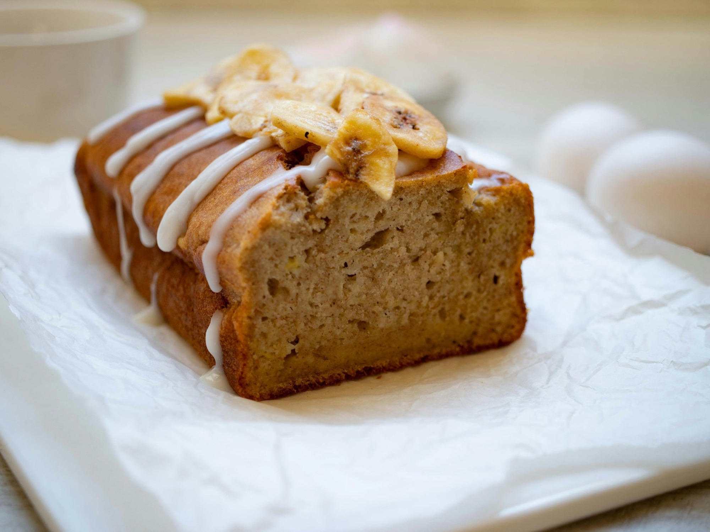

Recipe
Grandma’s Banana Bread
A moist loaf for very ripe bananas. One bowl, about an hour, 10 slices.

Ingredients
- 3 very ripe bananas
- 100 g melted butter
- 150 g brown sugar
- 2 eggs
- 250 g plain flour
- 1 tsp baking soda
Method
- Heat the oven to 175°C / 350°F and line a loaf tin.
- Mash the bananas and whisk in the butter, sugar and eggs.
- Fold in the flour and baking soda.
- Bake for 55 minutes, until a skewer comes out clean. Cool for 10 minutes before slicing.
Photo: Wouter Supardi Salari on Unsplash.